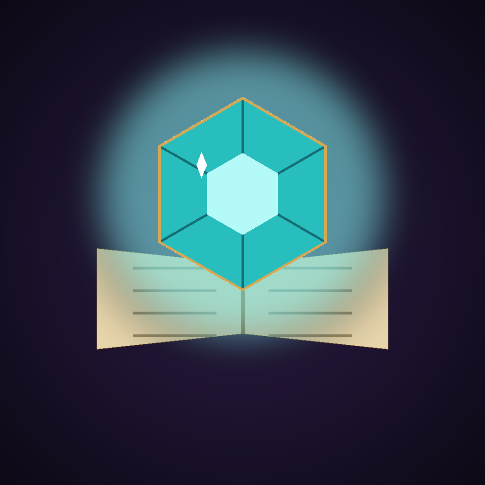
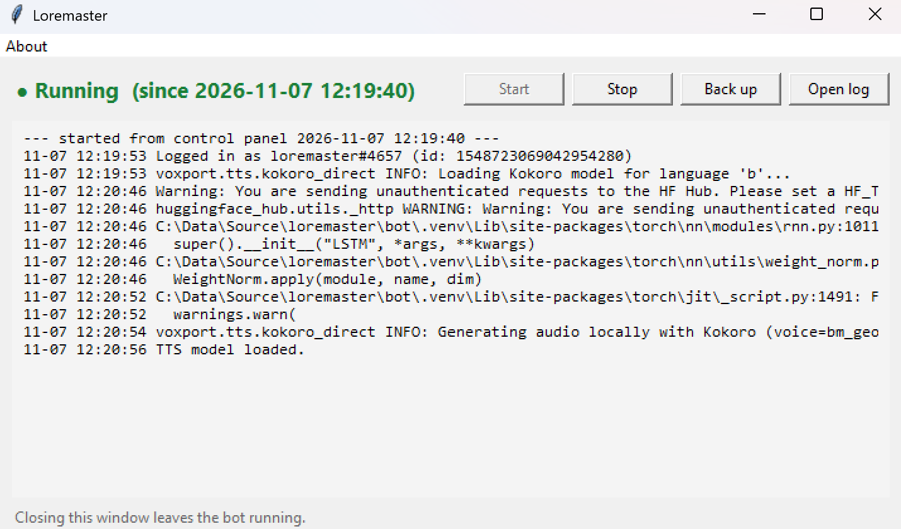

a question, a screenshot, a dice roll
plus the game you're playing and campaign memory
in the channel, as a file, or spoken aloud
Someone @mentions the bot in any channel it can see. It never jumps in uninvited.
Claude reads the core rules, your persona, the game extension and campaign memory.
A chat reply, a Markdown file to keep, or speech in your voice channel.
remember that Mira is now level 12.From the computer's random source, never the model's guess. Says who rolled highest.
Price, sales, co-op support, and how many people still play.
Recent patch notes and news the model can't know.
Reads character sheets, inventory screens, and attached .md or .txt files.
Ask for a "file" and the answer comes back as a Markdown download.
Kept per group. The owner can send any item on as a GitHub issue.
speak onJoins your voice channel and reads its replies aloud. Speech runs on your computer with Kokoro: no cost per reply. A few seconds on a CPU; much faster with an NVIDIA GPU.
listen on (experimental)Off by default. Say its name and a question, and it answers. Needs a separate speech-to-text server. It hears everyone in the channel, so tell your group first.

pip install -r requirements.txt, then put your Discord token and API key in .env.